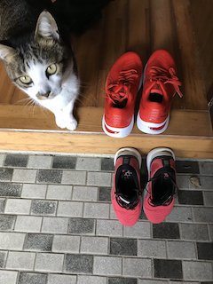

紹介
ブログ
故障履歴
ランニングコース
- ランニングでビルドアップして3分/kまで上げて心拍最大に持っていって死の淵を覗くのが趣味である
- 死ぬために走っている、最近心拍最大に持っていくことにためらいがなくなった
- いや生の確認のために走っている
- だが膝痛やモートン病がそれをさせない
- もとめるもの死も生もトレードオフするらしい
- 私は経験からどの仕事も妥協点(トレードオフ)を探すものだと言い切れる
- ただ、仕事は他人との関わりがじゃまをしてくる
- しかしランニングは孤独であるがゆえに己で完結し誰にも迷惑はかけない
- そういう意味でランニングは私が手にした、ただひとつの自由だ、だから続けている
- つまりは死も生も私の自由ということだ
- こんな素晴らしいものは手渡すわけにはいかない
kayano29

kayano28でのオーダーインソール